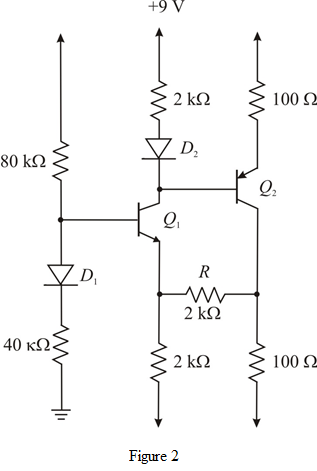

Replace the resistor with open circuit.
with open circuit.
Draw the modified circuit as shown in Figure 1.
Replace the resistorwith open circuit.
Draw the modified circuit as shown in Figure 1.
Determine the current.
The voltage  is,
is,
Thus, the voltage is .
is .
Determine the voltage .
.
Thus, the voltage  is
is .
.
Determine the current .
Since , the value of the collector current is,
, the value of the collector current is,
The voltage  is,
is,
Thus, the voltage  is
is  .
.
Since the transistor is in active mode, the collector to base voltage is,
From the circuit shown in Figure 1, the base voltageis,
Thus, the voltage  is .
is .
The voltage  is
is
Thus, the voltage  is .
is .
Since , the collector current is,
, the collector current is,
Determine the voltage .
.
Thus, the voltage is .
.
Connect the resistor and draw the modified circuit.
and draw the modified circuit.

From the circuit shown in Figure 2, the current is,

The voltage  is,
is,

Thus, the voltageis .
.
Determine the emitter voltage .
.

Thus, the emitter voltage is.
Determine the current across the  resistor at the bottom of the emitter side of transistor
resistor at the bottom of the emitter side of transistor  .
.
Since the two resistors are in parallel combination, equal current is divided into both the resistors.
Determine the current  .
.
 ,
,
Calculate .

Thus, the voltage  is
is  .
.
From the circuit shown in Figure 2,
Thus, the voltage is .
The voltage  is
is
Thus, the voltage  is .
is .
Determine the emitter current in  .
.
Since ,
Apply Kirchhoff’s Current Law at the collector node of  .
.
Thus, the voltage  is .
is .
Consider .
Determine the base current.

This is a significant value and must be taken into consideration.
The bottom two resistors have equal voltage drop.
…… (3)
Also,
Simplify further.
…… (4)
Write the expression of the base voltage.
…… (5)
Solve equations (4) and (5).
 and
and
Thus, the voltage  is.
is.
The voltage  is,
is,
The voltage drop on top two resistors is equal.
Substitute for.
The voltage is,
Thus, the voltage  is .
is .
Determine the base voltage .
.
Thus, the base voltage  is .
is .
The collector current is,
The voltage  is,
is,
Thus, the collector voltage is.
For = 100 and R connected:
To simplify the solution, assume that current flowing through  is very much greater than
is very much greater than  .
.
Then the voltage  is,
is,
Draw the equivalent circuit.
From the circuit shown in Figure 3.
From the circuit shown in Figure 3.
…… (6)
…… (7)
Solve equations (7) and (6) .
Hence the voltage is .
The current is,
The current  is,
is,
The voltage  is,
is,
Hence the voltage  is .
is .
The voltage  is,
is,

Hence, the voltage is.
is.
Determine the current  .
.
The current  is very small compared to .
is very small compared to .
Hence, the taken assumption is correct.